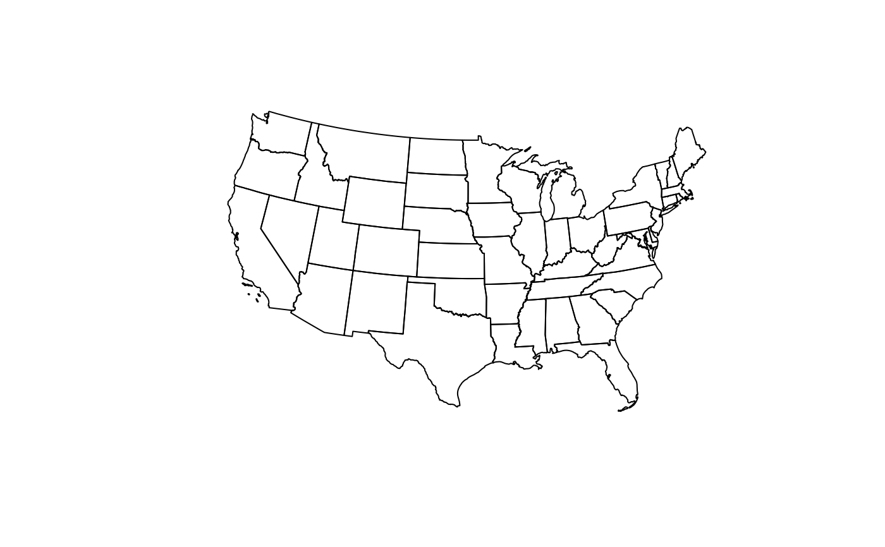
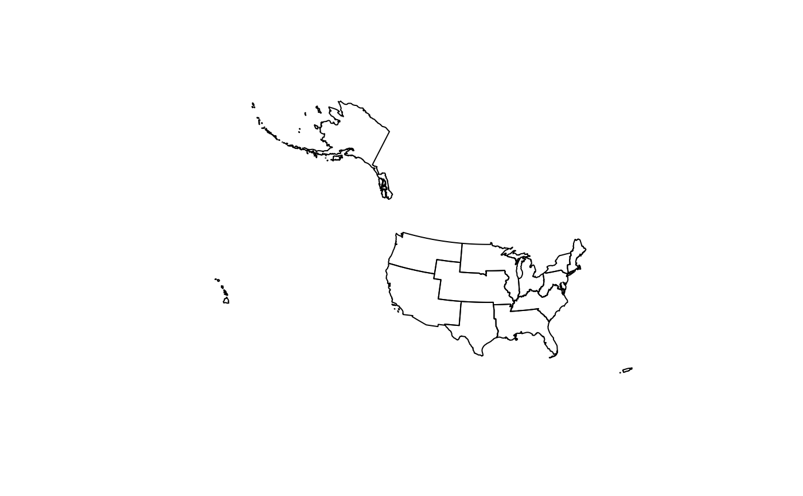

Each row represents one U.S. state, the District of Columbia or Puerto Rico (52 rows), annotated with its UNOS region. Geometries are state polygons projected to NAD83 / Conus Albers (EPSG:5070).
Format
An sf object with one row per state and the following columns:
- Region
UNOS region label (character)
- State
State name as in the Census shapefile (character)
- geometry
sfc_MULTIPOLYGONin EPSG:5070
Source
U.S. Census Bureau Cartographic Boundary Files (2018), states (20m).
UNOS region membership table from
data-raw/UNOS regions.xlsx.
Details
The object is generated in data-raw/ by joining a table of UNOS region
membership (state → region) to Census state boundaries and projecting once to
a CONUS-appropriate projected CRS. Note this is state-level geometry; to
obtain region polygons, dissolve by Region (see Examples), or use
get_hrsa_optn_regions().
Alaska and Hawaii are in Region 6 and Puerto Rico in Region 3. EPSG:5070 is
designed for the contiguous United States, so these three are distorted in
it, and on a national map they stretch the extent. For maps of the
contiguous states, drop them
(UNOS_regions_sf[!UNOS_regions_sf$State %in% c("Alaska", "Hawaii", "Puerto Rico"), ]);
to show them below the contiguous states, use shift_noncontiguous().
The original lat/long CRS of the shapefile is transformed to EPSG:5070, an
equal-area projection, for mapping. The boundaries are generalized Census
cartographic files, so areas and distances computed from them are
approximate.
OPTN splits three states between regions: Northern Virginia is in Region 2, eastern Vermont in Region 1 and southern Ohio in Region 11. This object assigns whole states, so all of Virginia is in Region 11, all of Vermont in Region 9 and all of Ohio in Region 10.
Examples
if (requireNamespace("sf", quietly = TRUE)) {
# quick look at the contiguous states
contiguous <- UNOS_regions_sf[
!UNOS_regions_sf$State %in% c("Alaska", "Hawaii", "Puerto Rico"),
]
plot(sf::st_geometry(contiguous))
# build dissolved region polygons if needed
unos_regions_poly <- UNOS_regions_sf |>
dplyr::group_by(Region) |>
dplyr::summarise(geometry = sf::st_union(geometry), .groups = "drop") |>
sf::st_make_valid()
plot(sf::st_geometry(unos_regions_poly))
}

